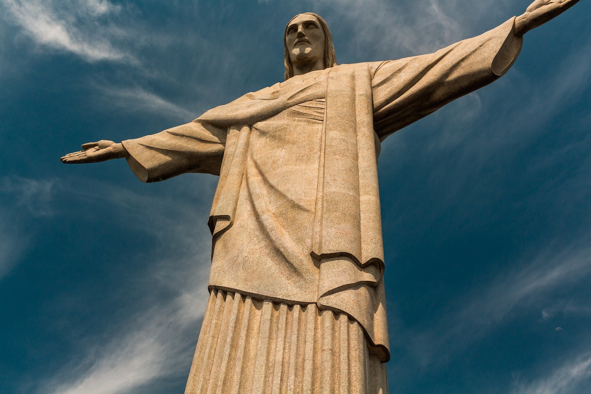
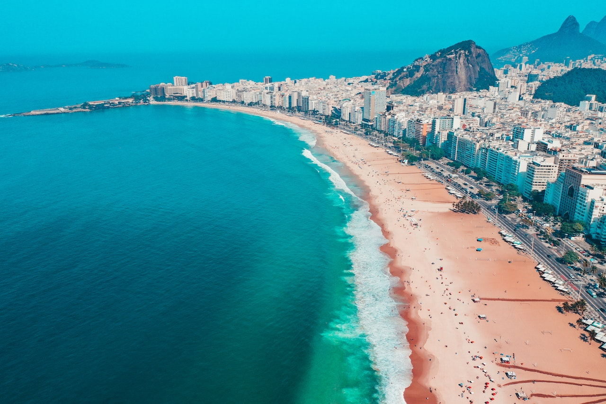

Mundialmente conhecida como a Cidade Maravilhosa, o Rio de Janeiro tem 456 anos de existência. Fundado em 01 de março de 1565 pelo militar português Estácio de Sá, o município tem aproximadamente 6,8 milhões de habitantes na atualidade.
A chegada da corte portuguesa no Brasil é peça chave na transformação e desenvolvimento urbano da cidade. Com o deslocamento da família real para o país, mais especificamente para o Rio, ocorrem transformações sociais, culturais, econômicas e políticas de curto, médio e longo prazos. Dessa forma, torna-se um tema bastante rico para ser aproveitado pelos elaboradores da prova.
Apesar de ter se solidificado e ampliado sua produção no oeste paulista, foi na capital da colônia que o café ganhou uma escala de produção que permitiu atender aos mercados europeu e norte-americano. O crescimento contínuo da produção do café foi responsável pela formação socioeconômica carioca no século 18, o que tornou o Rio de Janeiro uma 'grande fazenda de café'. Tal característica era tão marcante que a noção de 'cidade' só se aplicava ao que hoje chamamos de 'centro do Rio'. Vem daí uma expressão muito usual entre os mais velhos quando falam que vão ao centro do Rio: "Vou à cidade!".
Tendo sido a principal revolta urbana da República Oligárquica, ganha ainda mais importância quanto observada pelo ponto de vista social. Uma revolta que conta com apoio de setores variados da sociedade, mas com uma presença mais do que marcante da população negra e pobre da cidade. A revolta deve ser estudada sob a ótica do desenvolvimento e estruturação urbana do Rio de Janeiro, considerando a ampliação do transporte público, o escoamento populacional para outros pontos do Rio fora do centro e a favelização da cidade.
Durante todo o período conhecido como a Era Vargas, devemos lembrar de que os despachos presidenciais ocorreram no Palácio do Catete, antes da mudança da capital para Brasília. Lembremos também que o fato mais conhecido da história de Vargas, seu suicídio, ocorre em sua residência oficial no Rio de Janeiro. Tal fato afeta significativamente a política e toda a sociedade brasileira.
Com o desenvolvimento do projeto de revitalização da zona portuária do Rio de Janeiro, por meio de escavações orientadas, foi descoberto recentemente o Cais do Valongo, porta de entrada para mais de 500 mil africanos, que foram trazidos como escravos para o Brasil. Considerando-se que é uma descoberta recente, que recebeu da Unesco o título de Patrimônio Histórico da Diáspora Negra (título raro oferecido pela organização), passa a ser um tema de grande importância na história da cidade. Sua maior relevância reside no fato de que a vinda dos africanos afeta de maneira substancial a vida e o desenvolvimento do Rio. Todas as características que podem ser observadas hoje em nossa cidade têm, de certa maneira, a interferência do negro africano. Seja na culinária, na música, na economia, na geografia, na sociedade e em outros diversos temas, a influência negra se faz presente.